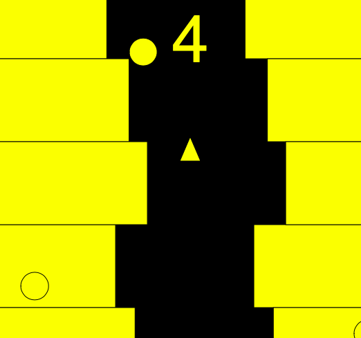
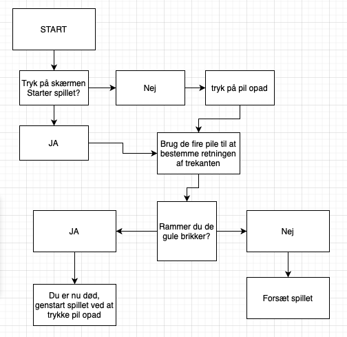

Spil og samarbejde
Tilbage
Hvad var meningen ved spillet?
Vores ide bag spillet var, en trekant "rumskib" ude i rummet, hvor de skulle prøve at ungå de kugler "asteroider og kometer" der kommer flyvende ind fra alle retninger. Der er et bestemt forum de må bevæge sig i, og hvis man så rør noget af det gule, er man død.
Sådan ser spillet ud

Hvordan får man point?
Vores pointsystem fungere således at man efter tid gradvist får flere og flere point. Når man så dør, fordi man bliver ramt af en kugle eller går ind i det gule terræn, nulstilles spilet, og man genstarter. Målet er så at slå sin egen record, ved at blive ved indtil man bliver bedre og bedre.
Hvordan er spillet lavet?
Vi har ved brug af kodninger til at starte med lavet et terræn, hvor der kommer random firkanter inden for et bestemt interval, som danner en bane i midten. Disse firkanter er indstillet sådan så når man støder ind i dem, nulstilles spillet. Vi har så lavet nogen kugler som kommer ind fra forskellige retninger, hvor de også er opskrevet sådan så man dør, hvis man berører dem. Vi har så lavet en timer, der starter på 0, så er vores pointsystem.
Kan spillet spilles af flere?
Ved brug af makey makey, kan spillet spilles alene, eller man kan vælge at samarbejde, så f.eks. den ene styrer op og ned og den anden styrer frem og tilbage. Dette giver mulighed for at spille sammen, og gør spillet sjovere da man nu har mulighed for at samarbejde om at slå ens highscore.
Hvordan kan spillet forbedres?
Efter vores klassekammerater afprøvede vores spil, gav de os som feedback at vi kunne gøre spillet mere underholdene ved at tilføje en bagrund af f.eks. rummet, gøre vores trekant til et rumskib og kuglerne til asteroider. Så er spillet flottere og se på, og dermed sjovere at spille.
Flowchart
